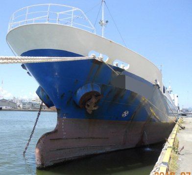

1,250 DWT 445 GRT General Cargo Blt 1995 Jp
/ informed by BNC SHIPBROKING CO., LTD.
(18-613)

- TYPE : GEARLESS / GENERAL CARGO SHIP
- BUILT : 1995, YAMAKAWA ZOSEN TEKKO, JAPAN
- FLAG/CLASS : JAPAN / JG COASTAL
- LOA/LBP/B/D : 72.76 / 69.29 / 11.00 / 6.50 m
- DWT/draft : 1,250 T / 4.02 m
- GRT : 445 T
- MAIN ENGINE : HANSHIN LH31G, 1,000 PS X 1set WITH REVERSING GEAR
- AUX ENGINE : YANMAR 6HAL-HTN, 180 PS X 1set FOR GENERATOR TWY28GS,
YANMAR 4CHL-TN, 62 PS X 1set FOR GENERATOR TWY22D,
ISUZU UH6BGITC2 FOR BOW THRUSTER DRIVE
- GENERATOR : TAIYO TWY28GS, 130 KVA DRIVEN BY YANMAR 6HAL-HTN,
TAIYO TWY22D 50 KVA DRIVEN BY YANMAR 4CHL-TN,
SHAFT GENERATOR (OMEGA) TAIYO FB28D 100 KVA DRIVEN BY M/E
- PROPELLER : FPP (NAKASHIMA MADE)
- BOW THRUSTER : FITTED (KAMOME PP MADE)
- HOLD/HATCH : 1 / 1, ELMAN TYPE HATCH COVER
- HATCH SIZE : 37.15 X 8.50 X 5.20 M
- CREW COMPLEMENT : 5 CABINS
- LOCATION : JAPAN
- DELIVERY : OCT., 2018 AT KOMATSUSHIMA, JAPAN
Information History
- 180807 : She is available for sale.